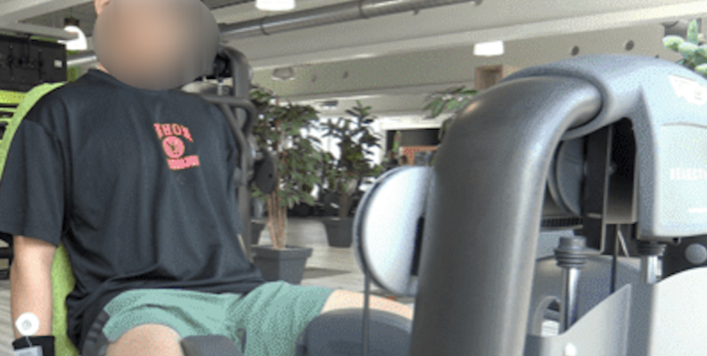

The RecGym dataset is a collection of gym workouts with IMU and Capacitive sensors, designed for research and development in recommendation systems and fitness applications.
The data set records ten volunteers' gym sessions with a sensing unit composed of an IMU sensor (columns of A_x, A_y, A_z, G_x, G_y, G_z) and a Body Capacitance sensor (column of C_1). The sensing units were worn at three positions: on the wrist, in the pocket, and on the calf, with a sampling rate of 20 Hz. The data set contains the motion signals of twelve activities, including eleven workouts: Adductor, ArmCurl, BenchPress, LegCurl, LegPress, Riding, RopeSkipping, Running, Squat, StairsClimber, Walking, and a "Null" activity when the volunteer hangs around between different workouts session. Each participant performed the above-listed workouts for five sessions in five days (each session lasts around one hour). Altogether, fifty sessions of normalized gym workout data are presented in this data set.
You can download the RecGym dataset from Kaggle: RecGym Dataset on Kaggle.
The dataloader of RecGym is available here for ease-of-use: RecGym Data Loader on Kaggle.
For more details, please visit:
The dataset is available under the Creative Commons Attribution 4.0 International License.
For questions or feedback, please contact the dataset creator on Kaggle.